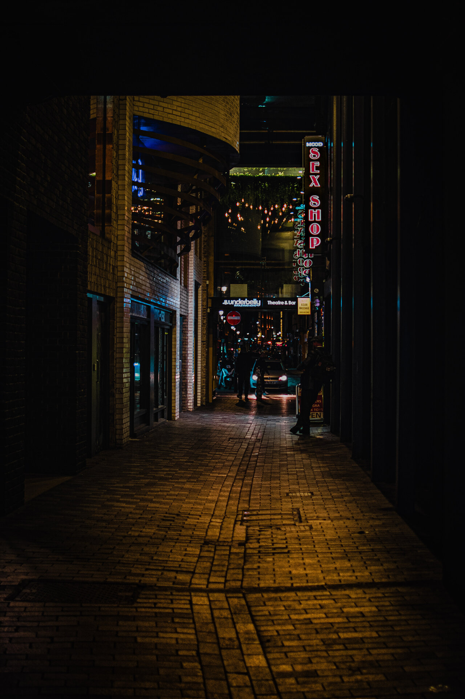

AVT 253 · 2026
Two Places at Once
Six photographs tracing the arc from immersion to departure to return, and the strange lag that travel leaves behind. Mumbai · Harpers Ferry · Loudoun County · Fairfax.
View project →

AVT 253 · 2026
The Hour of Breaking
Five photographs from a single evening on Mohammed Ali Road during Ramadan, tracing the rhythm of iftar from quiet preparation to full release. Mumbai.
View project →

Photographic Essay · 2026
Never Again
Twenty-five photographs from the 81st liberation commemoration ceremonies at Gusen and Mauthausen, Austria. A record of memory, cruelty, family, and warning.
View project →

Street Photography · 2026
London After Dark
Eleven photographs wandering London's iconic streets after dark. Soho, Piccadilly Circus, Kensington Gardens, the Underground — the city after the tour buses leave.
View project →

Travel Photography · 2026
Saint-Malo
Seventeen photographs from the walled port city of Saint-Malo, Brittany — tidal coast, ramparts, ancient streets, and the Atlantic light.
View project →